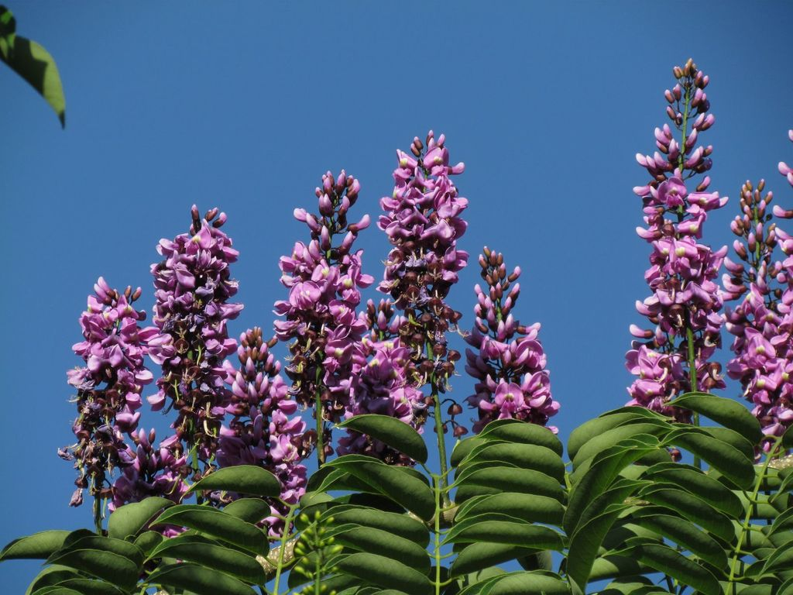
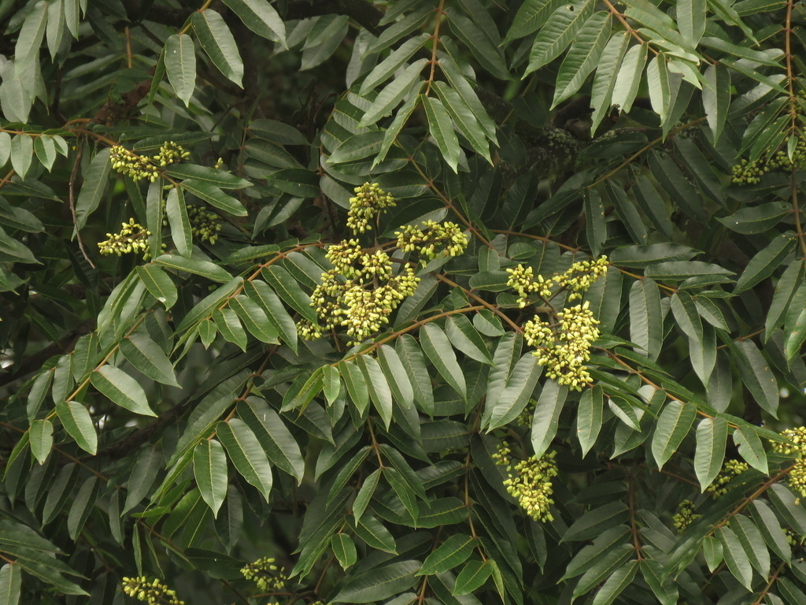
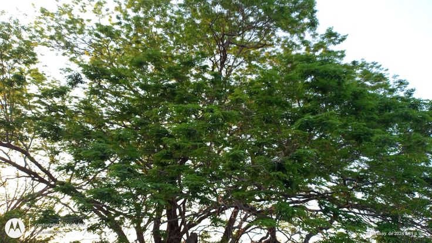

Plantas Endémicas de Yucatán
Yucatan cuenta con una gran variedad de plantas nativas y de otros ecosistemas, como la Nochebuena, las bugambilias, los helechos
y los Ficus, que se cultivan como ornamentales.
5 plantas endémicas

Arbol de hasta 10 mts. de altura, con follaje denso y redondeado; las flores de color lila-morado muy llamativas, florea de noviembre a
enero; los frutos son vainas planas de hasta 10 cm de largo por 4 de ancho. Especie endemica de la peninsula de Yucatan, es usado como
ornamental.

Es un arbol de mediano a grande tamaño, que puede alcanzar hasta los 20 mts de altura. Es una especie caducifolia, con una copa ancha y
redonda. El cedro se encuentra en la Peninsula de Yucatan, especialmente en las selvas bajas y algunas veces en la selva andina lluviosa.
 La ceiba es sin duda una planta majestuosa, uno de los arboles mas grandes del continente. Tiene una altura promedio de 20 y 40 metros,
La ceiba es sin duda una planta majestuosa, uno de los arboles mas grandes del continente. Tiene una altura promedio de 20 y 40 metros,
aunque se han documentado ejemplares con hasta 70 metros de alto.
Ademas, es un arbol frondoso, con una anchura que alcanza los 20 metros; generosos en sombra, con bellas flores que despiden un peculiar
perfume; y por si fuera poco, con una longevidad promedio de 60 años.
Kitanche

Arbol que crece hasya 20 metros de altura, subcaducifolio, copa irregular, corteza escamosa, madera de color crema-amarillenta, hojas
compuestas imparipinnadas, flores amarillas vistosas perfumadas en racimo, florea de marzo a abril, los frutos son vainas aplanadas de
color pardo-amarillento-brillante con varias semillas amarillo verdosas.
Derechos Reservados "Estrella Arcos" © 2025
|